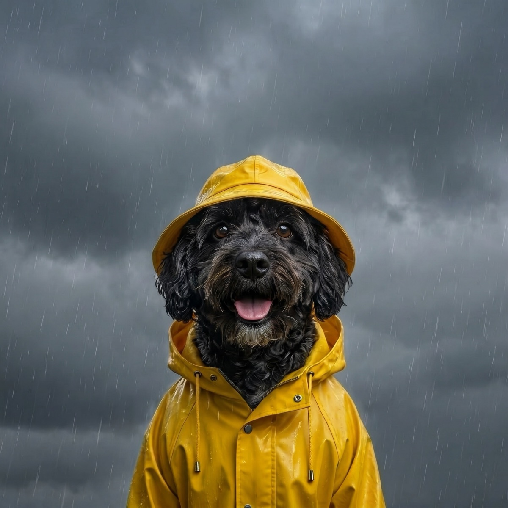

The Internet's Favorite Pets-in-the-Rain Moments
There is a whole genre of pet video that never gets old: the dog mid-leap into a puddle, the cat scowling at the downpour from a windowsill, the puppy meeting rain for the very first time. Pets in the rain are pure, reliable joy. Let us celebrate the classics, and dig into why some pets go wild for a wet day while others act personally offended by it.
The greatest hits of the genre
- The puddle stomper. The dog who treats every puddle as a personal trampoline, soaking everyone within ten feet and looking thrilled about it.
- The offended cat. One paw out the door, a single drop landing, and a slow turn back inside with a look of total betrayal.
- The first-rain puppy. Head tilts, the confused snap at falling drops, the eventual zoomies. Discovering weather in real time.
- The dramatic refuser. The dog who plants all four feet at the door and becomes mysteriously 200 pounds the moment the leash comes out in a drizzle.
- The happy swamp monster. The one who comes back from a rainy walk soaked, muddy, and grinning ear to ear.

Why some pets love rain and others hate it
It is not random. A few things shape whether your pet is team puddle or team please-no:
Coat type. Water dogs like Labs, goldens, and Newfoundlands were bred with water-resistant coats and an enthusiasm to match. A thin-coated or small dog gets cold and soaked quickly, and as the ASPCA's cold weather safety tips note, a wet coat in chilly air pulls heat from the body fast, so their reluctance is just good sense.
Cats and water. Most cats dislike rain because a waterlogged coat is heavy, cold, and slow to dry, which is the last thing a self-respecting predator wants. We dug into this in why cats hate rain so much, and it really does come down to comfort and control.
The noise factor. For some pets the issue is not the water at all, it is the sound. Heavy rain and the thunder that often comes with it can be genuinely scary. The American Veterinary Medical Association's guidance on noise anxiety in pets explains how loud, sudden sounds like thunder can genuinely frighten a sensitive dog, which is a different problem from simply not liking wet feet.
Early experiences. A puppy who had happy, low-pressure first encounters with rain tends to grow into a dog who shrugs it off, while a bad early scare can stick.
Making rainy days good days
Whether your pet is a stomper or a refuser, a little prep keeps everyone happy:
- Respect the refusers. Do not drag a frightened dog into a storm. Offer a covered potty spot and keep it brief.
- Towel station by the door. A quick dry-off after the walk keeps a wet dog comfortable and your floors intact.
- Tire them out indoors. On true downpour days, swap the walk for indoor games: tug, puzzle feeders, and short training sessions burn energy that the rain stole.
- Get the shot. If your pet loves the rain, lean in. A burst of photos of a puddle leap is internet gold, and a happy memory.
Half the fun is knowing the rain is coming so you can be ready with the towel, or the camera. With WeatherPets, your own pet delivers the day's forecast in character, so a rainy morning arrives with a little personality instead of a boring push alert. Your dog telling you it is about to pour is somehow much better motivation to grab the umbrella.
Gear that helps: for the dogs who will brave a drizzle, a good dog raincoat keeps walks comfortable and dry. See our full picks in the best dog rain jackets.
WeatherPets is an Amazon Associate and may earn from qualifying purchases, at no extra cost to you.